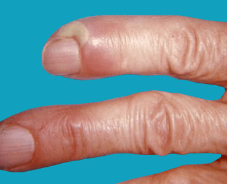
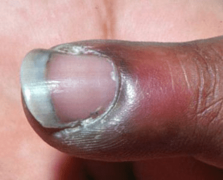

An acute infection almost always occurs around the fingernails and develops quickly. It’s usually the result of damage to the skin around the nails from biting, picking, hangnails, manicures, or other physical trauma. Staphylococcus and Enterococcus bacteria are common infecting agents in the case of acute paronychia.
Chronic paronychia can occur on your fingers or toes, and it comes on slowly. It lasts for several weeks and often comes back. It’s typically caused by more than one infecting agent, often Candida yeast and bacteria. It’s more common in people who’re constantly working in water. Chronically wet skin and excessive soaking disrupts the natural barrier of the cuticle. This allows yeast and bacteria to grow and get underneath the skin to create an infection.

A bacterial agent that’s introduced to the area around your nail by some type of trauma typically causes an acute infection. This can be from biting or picking at your nails or hangnails, being punctured by manicurist tools, pushing down your cuticles too aggressively, and other similar types of injuries.
The underlying agent of infection in chronic paronychia is most commonly Candida yeast, but it can also be bacteria. Because yeasts grow well in moist environments, this infection is often caused by having your feet or hands in water too much of the time. Chronic inflammation also plays a role.